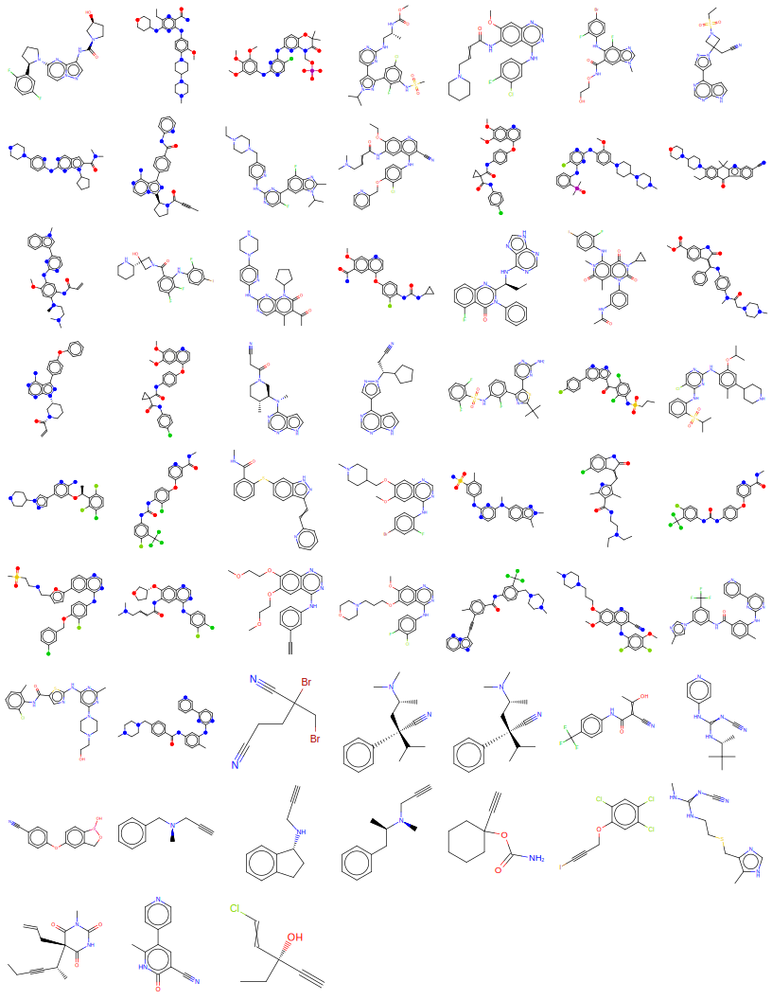

Chaya D Stern 0000-0001-6200-3993
· ChayaSt
· SternChaya
Tri-Insitutional PhD Program in Chemical Biology, Memorial Sloan Kettering Cancer Center, New York, New York 10065, USA; Computational and Systems Biology Program, Memorial Sloan Kettering Cancer Center, New York, New York 10065 USA
· Funded by [‘NSF GRFP DGE-1257284’, ‘MolSSI NSF ACI-1547580’, ‘NSF CHE-1738979’]
Daniel G A Smith 0000-0001-8626-0900
· dgasmith
· dga_smith
The Molecular Sciences Software Institute, Blacksburg, Virginia 24060 USA
· Funded by [‘NSF OAC-1547580’, ‘Open Force Field Consortium’]
Josh Fass 0000-0003-3719-266X
· maxentile
· maxentile
Tri-Insitutional PhD Program in Chemical Biology, Memorial Sloan Kettering Cancer Center, New York, New York 10065, USA; Computational and Systems Biology Program, Memorial Sloan Kettering Cancer Center, New York, New York 10065 USA
· Funded by [‘NSF CHE-1738979’]
Lee-Ping Wang 0000-0003-3072-9946
· leeping
Department of Chemistry, University of California, Davis, Califnornia 95616 USA
David L Mobley 0000-0002-1083-5533
· davidlmobley
· davidmobley
Departments of Pharmaceutical Sciences and Chemistry, University of California, Irvine, California 92697
· Funded by [‘NIH R01GM132386’]
John D Chodera 0000-0003-0542-119X
· jchodera
· jchodera
Computational and Systems Biology Program, Memorial Sloan Kettering Cancer Center, New York, New York 10065 USA; BIH Einstein Visiting Professor, Charité Universitätsmedizin, Berlin
· Funded by [‘NSF CHE-1738979’, ‘NIH R01GM132386’, ‘NIH P30CA008748’, ‘Sloan Kettering Institute’]
Abstract
Accurate small molecule force fields are crucial for predicting thermodynamic and kinetic properties of drug-like molecules in biomolecular systems.
Torsion parameters, in particular, are essential for determining conformational distribution of molecules.
However, they are usually fit to computational expensive quantum chemical torsion scans and generalize poorly to different chemical environments.
Torsion parameters should ideally capture local through-space non-bonded interactions such as 1-4 steric and electrostatics and non-local through-bond effects such as conjugation and hyperconjugation.
Non-local through-bond effects are sensitive to remote substituents and are a contributing factor to torsion parameters poor transferability.
Here we show that fractional bond orders such as the Wiberg Bond Order (WBO) are sensitive to remote substituents and correctly captures extent of conjugation and hyperconjugation.
We show that the relationship between WBO and torsion barrier heights are linear and can therefore serve as a surrogate to QC torsion barriers, and to interpolate torsion force constants.
Using this approach we can reduce the number of computational expensive QC torsion scans needed while maintaining accurate torsion parameters.
We demonstrate this approach to a set of substituted benzene rings.
1. Introduction
Molecular mechanics (MM) methods rely on Newtonian physics inspired empirical force field to describe the potential energy of the system and are widely used to study larger systems with \(10^3\) - \(10^6\) atoms [1].
They are sufficiently cheap and accurate to study biological relevant systems and provide atomistic details of mechanisms in enzymes in solution and can reliably predict thermodynamic properties such as binding free energies [2; 3; CITE free energy].
However, given the larger chemical space small small molecule force fields need to cover to adequately represent druglike molecules and common metabolites, they have lagged behind protein force fields [4,5].
In MM forcefields, the potential energy is constructed with terms for bond stretching, angle bending, internal rotations, electrostatics and Lennard-Jones for attractive and repulsive forces [6,7,8].
These free parameters in these functionals are fit to reproduce experimental and quantum chemical (QC) data.
1.1 The torsion functional describes the potential energy of internal rotation
In most force fields (CHARMM [6], AMBER [7], OPLS [8]) the torsion potential is given by a truncated Fourier series:
where the sum is over torsion angles \(\phi\) and multiplicities \(n\).
The force constants $K_{, n} determine the barrier heights, the multiplicities \(n\) determine the number of minima and the phase angles $_{, n} determines the phase.
In most force fields the \(N\) can go up to 6 and the phase angles \(\delta\) are usually set to \(0^{\circ}\) or \(180^{\circ}\) to symmetrize the curve around \(0^{\circ}\)[9].
The torsion energy about a bond is determined by a combination of local and non-local effects from conjugation, hypercojugation, sterics, and electrostatics [10,11,12,13].
Steric and elecrostatic interactions are, in principle, accounted for by non bonded terms in most force fields, so a torsion profile would ideally primarily capture conjugation or hyperconjugation effects, and only the 1-4 electrostatics.
The torsion functional which models internal rotation is particularly challenging to parameterize and the least transferable relative to other bonded terms for several reasons [14,15,10].
First, torsion parameters are usually fit to computationally expensive QC torsion scans which introduces a bottle neck to setting up simulations.
Second, torsion parameters are ‘soft’ or very flexible degrees of freedom compared to bond and angle parameters.
Relatively small variations to the torsional potential surface can strongly influence molecular conformation distributions [15].
Given how critical torsion parameters are in determining conformation distributions in simulations, it is prudent for them to be accurately parameterized.
Third, torsion potentials can be strongly influenced by distal substituents due to changes in conjugation or hypercojugation, an effect very difficult to represent in a force field that uses only local chemistry to define parameters [CITE fragmenter paper].
When parameterizing a molecular system, the force field assigns atom types, or a description of the atom’s atomic number and chemical environment to every atom in the system [16,17].
The reason atom types are used is to allow transferability of parameters to other atoms in similar chemical environments.
A torsion type is defined by the quartet of atom types of the four atoms involved in the torsion [18,19].
However, these atom types are generally defined by their local chemical environment which leads to locally defined torsion types.
Therefore, non-local through-bond effects such as conjugation and hypercojugation are difficult to capture.
The inability of traditional torsion types to capture such effects and the torsion energy profile’s sensitivity distal chemical changes are contributing factors to torsion parameters’ poor transferability.
To address this issue of poor parameter transferability, many practitioners have employed bespoke parameterization where parameters are fit to a specific molecule.
Many automatic and semi-automatic tools exist to generate such bespoke paraemters such as GAMMP [cite], ffTK [cite], Paramfit [cite], and QUBEKit [20].
When only a few molecules need to be parameterized, these tools are very useful for aiding researchers in setting up molecular systems in a systematic and reproducible way.
However, the paraemters generated from such tools are not meant to be generalizable and are not practical when many molecules need to be paraemterized.
Another approach to overcome this lack of transferability is to add new atom types to adequately capture torsion profiles [21].
However, these new atom types are generally added in an unsystematic way and leads to a proliferation of other force field terms [22].
Atom type independent force fields seek to overcome both the proliferation of force field terms and transferability by moving away from using atom types.
The SMIRNOFF force field [22] uses SMARTS patterns for direct chemical perception to replace atom types and avoid table look-ups.
In the context of torsion types, the SMIRNOFF format allows one to create a new SMARTS pattern for a torsion type without the need to introduce new atom types.
These SMARTS patterns can be created at different levels of granualarity for torsion types without worrying about proliferation of other force field terms.
The Hyperconjugation for Torsional Energy Quantification (H-TEQ) [23; 24; 10.1021/acs.jcim.9b00585] approach uses
chemical principles of conjugation, hyperconjugation, and electronegativity of the atoms involved in the torsion to model torsion energies without the need to directly fit torsion parameters.
In this study we combine these two approaches by using the Wiberg Bond Order (WBO), a measure of electron population overlap between atoms in a bond, and
SMARTS torsion types to interpolate torsion force field parameters.
1.2 Fractional bond orders describe the extent of bonding between two atoms
In quantum mechanics, a molecule is a system of individual particles without explicit bonds - nuclei and electrons.
Chemists, however, think of molecules as atoms held together by bonds.
The connectivity graph of molecules is a very important mental model in chemistry, based on centuries of chemical observations and knowledge that chemists employ when thinking about molecules.
Many quantum chemists such as Pauling [25], Coulson [26], Mulliken [27],
Wiberg [28], and Mayer [29], Jug [30], Politzer [31] have worked on bridging the gap between the physical and chemical conception of atoms in molecules by an analysis of the wave function to arrive at a fractional bond order that is consistent with the chemical concept of the multiplicity of a chemical bond.
Given that these quantities try to make that connection, it is not surprising that fractional bond orders captures important, chemical properties that can be useful in many applications, specifically force field parameterization.
Indeed, In the MMP2 [32], MM3 [33] and MM4 [???] force fields, a Variable Electronegativity SCF derived bond order for pi-systems was used to fit bond length, bond force constants and twofold torsional force constants
Here we use the Wiberg Bond Order (WBO), a relatively simple and cheap quantity that comes for free from an AM1BCC calculation used to generate partial charges to interpolate torsion force constants.
First we show that WBOs are a good indicator of the electron density around the central bond and is linearly related to torsion barrier heights.
Then we show that it is possible to use this relationship to interpolate torsion force constants for the same torsion type in different chemical environments.
Lastly, we use a data-driven approach to generate SMARTS patterns for the needed torsion types and demonstrate this approach on a set of substituted phenyl rings.
2. Results and Discussion
2.1 Torsion energy barriers are sensitive to the chemical environment which can be influenced by remote substituents
In most force fields, torsions are defined by the quartet of atoms types involved in the dihedral [6,7,8,34].
Atom types encode chemical environments of atoms that usually only incorporate the local environment.
However, the quartet of atom types do not always capture all relevant chemistry, especially when the effects are nonlocal; atoms contributing to hyperconjugation, delocalization, or other nonclassical effects may not be part of the quartet involved in the torsion yet can influence the torsion profile [14].
In particular, with conjugated systems, distal electron-donating or -withdrawing substituents can exert a strong effect on torsional barrier height.
Simple examples can help illustrate this, such as the biphenyl example in different protonation states shown in Figure 1, A.
While the MM torsion profiles are all the same (Figure 1 D), the QC torsion profiles are different for each protonation state (Figure 1 C).
The torsion energy barrier increases relative to the neutral state for the cation, anion, and zwitterion, in that order.
The profile changes qualitatively as well.
For the neutral molecule, the lowest energy conformer is slightly out of plane, at \(150^{\circ}\) and \(120^{\circ}\).
For the others, the lowest energy conformer is at \(180^{\circ}\).
In the neutral molecule, the slightly out-of-plane conformer is preferred to accommodate the proximal hydrogens.
In the other cases, the increasing double-bond character of the conjugated central bond (shown for the zwitterion in Figure 1 B) makes the planar conformer preferred.
This trend poses problems to generalized torsion force field parametrization.
Most general force fields consider the central bond in all tautomers equally rotatable so their MM torsion profiles are all the same (Figure 1, D), while the QC scan clearly shows that they are not.
This illustrates one of the fundamental limits of atom types in classical force fields:
At what point in this series should a new atom type be introduced?
In this case, remote changes three bonds away from the torsion central bond gradually perturbed the conjugated bond from being highly rotatable to non-rotatable as the conjugation increased.
Figure 1:Torsion profiles can be sensitive to remote substituents changes in a molecule.[A] Biphenyl protonation states and tautomers with increasing Wiberg bond order for the central bond.
[B] The resonance structure of the biphenyl zwitterion shows how the central bond is highly conjugated. The Wiberg bond order
and torsion scan for this bond (see A and C) are reflective of a conjugated bond.
[C] Relative QC energy as a function of torsion angle of the central bond computed via QCArchive at B3LYP-D3(BJ) / DZVP level of theory.
The colors of the QC scan corresponds to the highlighted bonds in A.
[D] Same as C, but using MM energy computed via the openff-1.0.0 force field.
[E] Torsion barrier heights vs WBOs.
The color of the data points correspond to the highlighted bonds in A.
The QC torsion barrier height scales approximately linearly with the WBO.
2.2 The Wiberg bond order (WBO) quantifies the electronic population overlap between two atoms and captures bond conjugation
The Wiberg bond order (WBO) is a bond property that is calculated using atomic orbitals (AOs) that are used as basis sets in quantum and semi-empirical methods [35].
WBOs originally started within the CNDO formalism [28], but has been extended to other semi-empirical methods such as AM1 [36] and PM3 [37].
The WBO is a measure of electron density between two atoms in a bond and is given by the quadratic sum of the density matrix elements over occupied atomic orbitals1 on atoms A and B:
2.3 The WBO is an inexpensive surrogate for monitoring changes in the chemical environment around a bond
Since the WBO can be calculated from an inexpensive AM1 calculation, is indicative of a bond’s conjugation, and is correlated with torsion energy barrier height, it is attractive to use for interpolating torsion force constants.
However, WBOs are conformation-dependent [41,42], so we further investigated this dependence to understand if WBOs will be a robust descriptor.
In addition, we also investigated the generality of the torsion energy barrier and WBO linear relationship.
In this section, we will first discuss our findings and solution to the conformation dependency and then discuss the generality of the WBO linear relationship with torsion barrier height.
2.3.1 Conformation-dependent variance of WBOs are higher for conjugated bonds
Because they are a function of the electron density, WBOs are necessarily conformation-dependent.
However, not all bond WBOs change the same way with conformation.
We found that WBOs for conjugated bonds have higher variance with respect to conformation and that bonds involved in conjugated systems have WBOs that are correlated with each other.
This makes sense in terms of our qualitative understanding of conjugation strength depending on the alignment of \(\pi\) orbitals across the conjugated system: as the change of a distal torsion disrupts the \(\pi\) orbital alignment, the strength of that conjugation on the local torsion barrier decreases.
Figure 2:Variance and correlations of Wiberg bond order distributions with respect to conformations are higher for conjugated bonds.[A] Gefitinib, with its rotatable bonds highlighted and numbered to correspond with figures B and C.
[B] WBO distributions over 232 conformations of the highlighted, rotatable bonds.
The colors of the distributions correspond to
the colors in the highlighted bonds in A.
The variance and their 95% confidence interval are shown on the left (with exponent base of 1E-5).
The single non conjugated bonds (blue, (10, 11), red (11, 12), and olive (12, 13)) have lower variance than conjugated bonds (yellow (3, 2), purple (8, 9), orange (9, 10), grey (23, 19), and green(24, 24)).
[C] Correlation plot of WBOs every bond in Gefitinib against WBOs of all other bonds over 232 conformations.
The white lines indicate ring systems.
Bonds in conjugated systems have higher correlations between their WBOs (see the aromatic ring systems in the two lower right diagonal squares).
Both bonds (23, 19) (grey) and (24, 23) (green) have WBOs that are correlated with their neighboring ring systems, but bond (23, 19) are more correlated with the ring systems than the green bond (24, 23).
[D] Resonance structures of Gefitinib illustrate why the grey bond (23, 19) has higher variance than the green bond (24, 23) even if
both bonds are conjugated.
When the double bond is on bond (23, 19), the negative charge is on a nitrogen which is the more stable form, vs the resonance structure where the double bond is on (24, 23) with the negative charge on a carbon.
[E] The conformations of the molecule for the highest WBO and lowest in the distribution.
The mode with higher WBOs has bond (23, 19) in plane with quinazoline which allows for stronger conjugation while the mode with lower WBOs has the bond out of plane so there is less electron population overlap in out of plane conformation.
To investigate how WBOs change with conformation, we used Omega [43] to generate conformers for a set of kinase inhibitors (SI Figure 9) and calculated the WBO for each conformation from a B3LYP-D3(BJ) / DZVP [44,45,46,47] geometry optimized calculation using Psi4 [38].
Omega is a knowledge-based conformer generator that uses a modified version of MMFF94s [???] to score conformations.
It has been shown to accurately reproduce experimentally observed crystallography conformers in the Platinum benchmark dataset [48].
Figure 2 illustrates the results for Gefitinib (Figure 2, A), a representative molecule.
Figure 2, B shows the distribution of WBOs for all rotatable bonds color-coded with the colors used to highlight the bonds in Gefitinib (Figure 2, A).
Single carbon-carbon bonds and carbon-nitrogen bonds formed by atoms numbered 10-13 are freely rotating.
This is reflected by the tighter distribution (lower variance) of WBOs around closer to one for those bonds.
The bonds involving the ether oxygens and aromatic rings (formed by atoms numbered 1-3, 8-10, 19, 23-24) exhibit higher variance.
It is interesting to note the difference in the WBOs for the conjugated bonds formed by the nitrogen between the quinazoline and chloro fluoro phenyl (bonds formed by atoms numbered 19, 23 and 23, 24).
Both of these bonds are conjugated with their neighboring ring systems.
However, while the distribution of WBOs for bond 23-19 (the grey distribution) has two clear modes of almost equal weights, the WBO distribution for bond 24-23 has lower variance.
This is in agreement with the resonance structures shown in Figure 2.
The resonance structures that have the double bond on the bond closer to the quinazoline (bond 19-23) are more stable because the negative charge is on a nitrogen.
When the double bond is on the neighboring 23-24 bond, the negative charge is on an aromatic carbon which is less stable.
The results are similar for other kinase inhibitors tested shown in SI Figure 9.
In addition, when we inspected the conformations associated with the highest and lowest WBO in the grey distribution (Figure 2, E) we found that conformations with lowest WBO on bond 19-23 had that bond out of plane while the conformation with the highest WBO value had the bond in plane which allows conjugation.
We found similar results from WBOs calculated form QC torsion scans.
Figure 5 shows the WBO for each point in the QC corresponding torsion scans.
The WBOs are anti-correlated with the torsion potential energy which is in line with chemical intuition.
Conjugation stabilizes conformations and leads to more electronic population overlap in bonds [49].
At higher energy conformers, the aromatic rings are out of plane and cannot conjugate.
Therefore the WBO is lower for those conformers.
At lower energy conformations, the rings are in plane and can conjugate so the WBO is higher.
We found that the trends discusses above are similar when using semi-empirical methods such as AM1 (SI Figure 10).
For other levels of QC theory and for the Mayer bond order, the results can be different as discussed in the SI.
2.3.2 Bonds in conjugated systems have highly correlated conformation-dependent WBOs
We found that certain bond orders are strongly correlated or anti-correlated with each other, indicating strong electronic coupling.
As bonds in one conformation gain electron population overlap, the coupled bonds will decrease in electron population overlap and vice versa.
Figure 2, C shows the Pearson correlation coefficient for each bond WBO distribution against all other bond WBO distributions.
There is a clear structure in this correlation plot. The square formed by bonds from atoms 24-29 shows that the alternating bonds in the aromatic ring (25-29) are strongly anti-correlated with each other.
This trend is different in the ring formed by atoms 13-18, which is not aromatic.
In this ring, bonds 13-18, 13-14, 16-15 and 16-17 (which involve electron rich atoms O and N) have Pearson correlation coefficients with absolute values higher than for the other bonds in the ring, but lower than the bonds in the aromatic ring.
The bonds involved in the methoxy groups (atoms 1-3 and 8-10) are correlated with each other and also correlated to the quinazoline, albeit not as strongly.
The bonds between the chloro fluoro phenyl and quinazoline follow the same trend as their WBO distribution and resonance structures.
The bond closer to the quinazoline (bond 23-19) has WBO distribution correlated with the quinazoline while the bond closer to the
chloro fluoro phenyl (bond 23-24) is not as strongly coupled with the quinazoline.
The trends are similar for other kinase inhibitors examined, as shown in SI Figure 9.
2.3.3 Electronically least-interacting functional group (ELF) method provides a useful way to capture informative conformation-independent WBOs
[Note: Change these distributions to be over subsituted phenyl set?].
As we have shown, the WBO is conformation-dependent and this dependency can also be highly informative of the electronic couplings within a system.
Figure ?? shows the distribution of standard deviations of the conformation-dependent WBO distribution in blue.
Most of the standard deviations fall below 0.03, which is encouragingly small.
However, it can become computationally expensive to calculate the WBO for all conformations; if we aim to use WBOs as a descriptor for torsion barrier heights in a reproducible way, we need a way to capture informative conformation-independent WBOs.
The Electronically Least-interacting Functional groups (ELF) conformation selection scheme implemented in the OpenEye Toolkit quacpac module [50] resolves the issue of sensitivity of molecular mechanics electrostatic energies from QC derived charges.
The ELF10 method begins with a large set of conformers for the molecule.
MMFF94 charges [???] are assigned to the molecule, set to their absolute value, and then single-point Coulomb electrostatic energies evaluated for each conformer.
The lowest-energy 2% of conformers are selected, and if there are more than 10, from these the most diverse 10 are selected.
For this final conformer set (up to 10 conformers), the AM1 WBOs and charges for each conformer are averaged (by bond and by atom, respectively) and the BCCs are applied to the charges [51].
This method yields a set of AM1-BCC atomic partial charges and WBOs for the molecule which are relatively insensitive to the initial choice of conformer set, and which mitigate two pathologies of AM1-BCC charges: peculiar charges resulting from strong intramolecular electrostatic interactions (e.g. from internal hydrogen bonds or formal charges) and simple conformational variance.
Figure 3:Distribution of WBO in drug-like molecules is concentrated near chemically sensible values.[A] The distribution of all WBOs for all bonds in molecules in set. The mode at one, close to two and close to three correspond to
single, double and triple bonds. the density between one and two correspond to aromatic and conjugated bonds. The mode at ~0.7 correspond
to bonds that include sulfur and phosphorous which are longer, weaker bonds. [B] The blue distribution includes carbon - carbon bonds that
are not in rings. The modes at one, two and three correspond to single, double and triple bonds. The pink distribution include bonds that are in rings.
The mode at one corresponds to single bonds and the density between one and 1.5 are aromatics. [C] The blue distribution includes bonds that have
either one or two nitrogens. Many of these bonds are conjugated as demonstrated by the density around 1.5. The density at three corresponds to
nitriles. The pink distribution include bonds that have oxygens. The mode at two corresponds to carbonyls.
This method can also be applied to produce WBOs that are insensitive to conformers.
To check how well AM1 ELF10 estimated WBOs recapitulates the multiplicity of bonds, we calculated WBOs from AM1 ELF10 calculations for all bonds in a set of molecules shown in SI Figure 11.
The distribution in Figure 3 corresponds closely with bond multiplicity.
The density at ~0.7 correspond to bonds involving sulfur and phosphorous since these are weaker and longer bonds.
The mode at ~1.0 corresponds to C-H and C-C bonds, the mode close to 1.5 corresponds to bonds in aromatic rings, the mode close to 2.0 corresponds to double bonds, and finally the triple bonds form the last peak.
Figures 3 B and D separate out different kinds of bonds to more clearly illustrate what the WBO captures.
Figure 3 B shows carbon - carbon bonds not in rings (blue) and bonds in rings (pink).
The carbon-carbon distribution has distinct modes at one, two and three corresponding to single, double and triple bonds. There is also a smaller mode at 1.5 that corresponds to conjugated bonds.
The pink distribution includes bonds in rings and has modes at one and 1.5 which corresponds to aliphatic and aromatic rings, respectively.
Figure 3 D shows distributions with bonds that have nitrogens (blue) and oxygens (pink).
The peaks occur at chemically sensible values; 1, 1.5 and 3 for nitrogen which corresponds to single, conjugated and triple bonds and 1 and 2 for oxygens which correspond to single and carbonyl bonds.
For the rest of this section, we focus on the robustness and generalizability of ELF10 WBOs.
2.3.4 WBOs are a robust signal of how torsion barrier heights depend on remote chemical changes
To investigate how resonance and electronic effects from remote substituents change the torsion energy of a bond, we took inspiration from the Hammett equation [52] of reactions involving benzoic acid derivatives.
The Hammett equation relates meta and para benzoic acid substituents to the acid’s ionization equilibrium constants
Here, \(\sigma\) is a substituent constant and \(\rho\) is a reaction constant.
It aims to isolate the resonance and inductive effects
of substituents from the sterics effects of a reaction. Here, we generated a combinatorial set of meta- and para-substituted phenyls
and pyridine (Figure 4, A) with 26 functional groups that cover a wide range of electron donating and withdrawing groups.
We then calculated the AM1 ELF10 WBO for the bond attaching the functional group to the aromatic ring (highlighted green in
Figure 4, A) for all functional groups which resulted in 133 (26 * 5 + 3) WBOs for each functional group in different chemical environments.
This allowed us to isolate the effect on a bond’s WBO from remote chemical environment changes, defined as a change more than two bonds away, from other effects such as sterics and conformations.
The resulting distributions are in Figure 4, B.
(Details on generating and accessing this set are provided in Section [hold] in the Detailed Methods.)
It is interesting to note that the trend of decreasing WBOs for more electron donating groups are anticorrelates with increasing Hammett substituent constants.
In SI Figure 12, the AM1 ELF10 WBOs of the bonds between the functional group and benzoic acid are plotted against their Hammett meta and para substituent constants (values were taken from Hansch et al. [53]).
Functional groups that are more electron donating will have more electron density on the bond attaching the functional group to the benzoic acid.
The resonance and/or inductive effect destabilize the benzoate, increases its pKa, which corresponds to lower substituent constants.
Figure 4:AM1 ELF10 Wiberg bond orders correlate with torsion barrier heights in related molecules.[A] Systems and functional groups used in the substituted phenyl set. The functional groups were chosen to span a large range of electron donating and withdrawing groups.
[B] AM1 ELF10 WBO distributions for the bond between the phenyl ring and X1 in different chemical environments.
[C] Selected QC torsion scan barrier heights vs AM1 ELF10 WBOs. These lines all had r2 greater than 0.7.
[D] Same as C but these series did not fit the lines as well (r2 less than 0.7).
Table 1:Slope and associated statistics for torsion barrier height vs WBO for selected functional groups.
X1
slope
standard error
r2 and 95% CI
N(Me)2
116.92
14.35
\(\textsf{0.88}_{\textsf{0.73}}^{\textsf{0.98}}\)
NHMe
134.52
16.19
\(\textsf{0.90}_{\textsf{0.83}}^{\textsf{0.98}}\)
NH2
64.27
20.76
\(\textsf{0.58}_{\textsf{0.06}}^{\textsf{0.95}}\)
NHEt
119.51
19.98
\(\textsf{0.84}_{\textsf{0.61}}^{\textsf{0.98}}\)
NH(C3H7)
163.76
23.81
\(\textsf{0.87}_{\textsf{0.73}}^{\textsf{0.99}}\)
OH
154.82
35.67
\(\textsf{0.73}_{\textsf{0.26}}^{\textsf{0.98}}\)
OMe
185.31
41.33
\(\textsf{0.80}_{\textsf{0.46}}^{\textsf{0.99}}\)
OEt
119.66
47.12
\(\textsf{0.48}_{\textsf{0.07}}^{\textsf{0.88}}\)
NHCON(Me)2
159.31
47.98
\(\textsf{0.58}_{\textsf{0.23}}^{\textsf{0.95}}\)
NHCONHMe
127.65
55.03
\(\textsf{0.43}_{\textsf{0.04}}^{\textsf{0.95}}\)
NHCONH2
238.12
54.12
\(\textsf{0.73}_{\textsf{0.41}}^{\textsf{0.98}}\)
NHCOEt
205.80
51.80
\(\textsf{0.69}_{\textsf{0.31}}^{\textsf{0.99}}\)
NHCOMe
144.32
64.12
\(\textsf{0.46}_{\textsf{0.02}}^{\textsf{0.99}}\)
OCONH2
172.72
84.85
\(\textsf{0.51}_{\textsf{0.03}}^{\textsf{0.98}}\)
COOH
267.23
91.46
\(\textsf{0.74}_{\textsf{0.04}}^{\textsf{1.0}}\)
COOEt
149.01
63.23
\(\textsf{0.58}_{\textsf{0.13}}^{\textsf{1.0}}\)
NO2
302.07
47.74
\(\textsf{0.91}_{\textsf{0.79}}^{\textsf{1.0}}\)
To investigate how these long range effects observed in the WBOs capture changes in the bonds’ torsion potential energy, we ran representative QC torsion scans for 17 of these functional groups (SI Figures 13, 14, 15, 1617).
We did not run QC torsion scans for the following functional groups:
* functional groups did not have a torsion such as halogens
* functional groups that were congested (such as trimethyl amonium)
* functional groups where the WBOs did not change by more than 0.01 for different functional groups at the meta or para position such as methyl.
We chose the representative molecules for the 17 functional groups by sorting the molecules within each functional group by their WBO and selecting molecules with minimum WBO difference of 0.02.
All of the resulting QC torsion scans are shown in SI Figures 13, 14, 15, 16, 17.
Table 1 lists the slopes and associated statistics for the fitted lines.
When we compare the standard deviations of WBO distributions with respect to conformation versus with respect to changes in chemical space (Figure ??, pink distribution), we find that the changes in ELF10 WBO for remote chemical environment changes are usually bigger than the changes in WBO that arise from change in conformation.
This allows us to use ELF10 WBOs as a good surrogate to changes the chemical environment that is reflected in QC torsion scans.
2.3.5 Conformation-dependent WBOs differentiate between though-space and through-bond non-local effects on QC torsion scans
We show representative series of torsion scans in Figure 5 and the corresponding conformation-dependant WBO at each conformation in the scan.
A QC torsion scan contains contributions of through-bond effects such as conjugation and / or hyperconjugation and through-space effects such as sterics and electrostatics interactions [10; 10.1021/jp046290d].
In this section we show how WBOs can be used to characterize through-space and through-space effects in QC torsion scans.
As a molecule is rotated about its bond to generate a QC torsion scan, changes in conjugation and / or hyperconjugation, the conformation of the rest of the molecule, and non-local, through-space interactions contribute to the potential energy surface that is then used to fit MM torsion parameters.
The torsion parameters in classical force fields are supposed to include both conjugation, a through-bond electron delocalization phenomenon that is not well modeled in classical forcefields, and corrections for 1-4 non-bonded interactions.
To increase their transferability, torsion parameters should not include non-bonded interactions beyond the 1-4 atoms.
However, in general, it is difficult to separate the contributions of sterics and conjugation in a QC torsion scan.
In this section we characterize steric and conjugation and / or hyperconjugation contributions to QC scans using the corresponding WBO scans.
Below is a summary of these observations from the subsituted phenyl torsion scans.
When QC torsion scans are anti-correlated with conformation-dependent WBOs calculated for conformations in the scan, differences in QC torsion scans for the same torsion types in different chemical environments are a result of non-local, through-bond effects.
If changes in QC torsion scans are not accompanied by highly anti-correlated WBOs, the changes are due to non-local, through-space, effects
When AM1 ELF10 WBOs do not obey the trend found in Figure 4 of the linear relationship with torsion barrier height for the same torsion type in different chemical environments, they are generally caused by non-local, through-space interactions.
Figure 5:Wiberg bond orders are anticorrelated with QC torsion scans.[A] Selected series of molecules with central torsion bonds connecting the nitro group to the phenyl ring highlighted and labeled with AM1 ELF10 WBOs.
[B] QC torsion scans for nitro series in different chemical environments shown in A.
The color of the scans correspond to the colors of the highlighted bonds in A.
Torsion energy barriers increase with increasing AM1 ELF10 WBOs.
[C] Wiberg bond orders calculated at each point in the QC torsion scan using the same level of theory.
[D] Conformer energy of torsion scan plotted against it WBO. All molecules in
this series have WBO that are anti-correlated with their QC torsion scan. Pearson correlation coefficients (\(\rho\)) are shown in the upper right legend.
[E] Same as A but with urea at the X1 position.
[F] Same as B but for urea in a series of different chemical environment. Both profiles and
energy barriers change with AM1 ELF10 WBOs. In addition, the grey scan has higher energy barriers than the olive scan but its ELF10 WBO is lower.
[G] Same as C but for urea. Here, the WBO scans all have the same profiles while the QC torsion scan does not.
[H] Same as D but here the WBO scans are not always anti-correlated or not as strongly anti-correlated.
The WBO scan profiles do not change because the changes in the QC torsion scan captures spatial effects while the WBO scans capture conjugation.
[I] Same as A with amino at the X1 position.
[J] Same as B but for amino in different chemical environments. While the gold scan is symmetric around 0\(\circ\), the red
and blue scan are not. The Blue scan is shifted and the red scan has a higher barrier on one side.
[K] Same as C but for amino. Here the WBO scans are anticorrelated with the QC torsion scans even if the QC scans have different profiles.
[L] Same as D but for amino. Here the WBO scans are atnicorrelted with the QC torsion scans.
Figure 5 shows three series of QC torsion scans for the same torsion type in different chemical environments to illustrate this.
Figure 5 A, E and I show three torsion types (nitro, urea and amino) in different chemical environments with their associated AM1 ELF10 WBO.
Figure 5 B, F, and J show their QC torsion scans, 5 C, G, and K show their conformation-dependent WBOs along the torsion scan, and 5 D, H, and L show the correlations between conformer energies and their conformer-dependent WBOs.
Figure 5 A-D show what is generally the expected behavior of QC torsion scans for the same torsion types in different chemical environments as shown in 4.
The QC torsion profiles in ??, B, are all the same, while the torsion barrier heights increase with increasing AM1 ELF10 WBOs.
WBOs calculated at every point of the QC torsion scan generate a profile that is generally anti-correlated to QC torsion scans as shown in 5, C and D.
This is in line with chemical intuition.
Increased conjugation is a result of increased electron population overlap which stabilizes conformations and decreases their energy.
The second derivative of WBOs along a QC torsion scan also changes depending on how strongly the bond conjugates at its lowest energy conformation.
For bonds with higher AM1 ELF10 WBOs (Figure 5, A and E) which indicates increased conjugation, the rate of change in the WBO scans are higher than for the same torsion types in environments where the bond does not conjugate as strongly (Figure 5, C and G).
This also makes sense with respect to chemical intuition.
At high energy conformations, where electronic orbitals are not oriented to conjugate, WBOs of the same bond in different chemical environments will be closer to each other than at lower energy where electronic delocalization is also a function of long distance chemical changes.
In other words, conjugation is disrupted similarly for the different chemical environment, but the extent of conjugation is different because of different remote substituents.
Figure 5 E-H shows a different series of the same torsion type in different chemical environments.
There are several differences between this example and the example discussed in the previous paragraph.
One, while the torsion types are equivalent for all four molecules shown in Figure 5 E, the QC torsion scans do not all have the same profile.
Relative heights of minima and maxima are different or new minima and maxima are observed.
In addition, their corresponding conformation-dependent WBO scans are not as strongly anti-correlated with the torsion scans (Figure 5, H) as in Figure 5 D.
Interestingly, the WBO scans do all have similar profiles Figure 5 G).
In this example, the urea is a more bulky functional group than the nitro and amino group in Figures 5 A and I.
The red and grey molecules also have bulky groups at the meta position relative to the torsion being driven.
This creates different steric clashes for the different molecules and changes their QC torsion profiles relative to each others.
However, the conformation-dependant WBO scans have similar profiles for the molecules in the series because the non-local through-bond effects are similar for the molecules in this series.
These WBO scans are not as anti-correlated to the QC scan as in the previous examples (-0.98, -0.99, -1.00 vs 0.7, -0.61, -0.97 and -0.67).
The blue scan is actually correlated instead of being anti-correlated.
Because while the electrons can conjugate when the torsion is in a planar position, the clashes of the proximal hydrogen and oxygen increase the energy.
This small barrier at 0\(^\circ\) does not exist in the grey and gold scan because the trimethylamonium is electron withdrawing, that the urea group can better conjugate with the phenyl ring and this stabilization is greater than the steric interactions.
This series also shows an example of molecules that do not follow the trend shown in Figure 4 where increasing AM1 ELF10 WBO corresponds to increasing torsion barrier heights.
The grey torsion scan (Figure 5 F) has torsion barrier heights that is ~15 kJ/mol greater than the gold torsion scan, while its AM1 ELF10 WBO is lower than the gold molecules (1.10 vs 1.11).
This happens because the trimethylamonium is a bulky group at the meta position and it interacts with the carbonyl in the urea which causes the the barrier heights to increase.
We observed this trend of bulky groups on the meta position clashing in most other cases where the AM1 ELF10 WBOs did not follow the trend of increasing torsion barrier heights (SI Figures 13, 14, 15, 16, 17).
Figure 6:Improper torsion angles can be coupled with torsion angles being driven in torsion scans.
Improper angles of pyramidal nitrogen involved in the torsion scan in Figure 5, J.
In the blue scan, the trivalent nitrogen is in a pyramidal conformation for the entire scan and the pyramid does not inter-convert.
In the red scan, the trivalent nitrogen is also in a pyramidal conformation for the entire scan, but the pyramid does inter-convert.
In the gold scan, the pyramidal nitrogen becomes planar at torsion angles 0\(^\circ\) and 180\(^\circ\) as the amino group conjugates with the phenyl.
Figures 5 I-L show yet another series of torsion scans that exhibit different behaviors than both examples already discussed.
In this example, QC torsion scans in 5 J all have different profiles, specifically, the symmetry around zero is lost in the blue and red scan, albeit differently.
The blue scan shifted such that the minima are not at 0\(^\circ\) and 180\(^\circ\) but the barrier heights are equivalent.
In the red scan, one barrier is ~10 kJ/mol higher than the other.
However, in these scans, the corresponding WBO scans are anti-correlated with the torsion scans (Figure 5, L).
Because in these cases, these changes are due to changes in conjugation, not because of non-local steric interactions.
All of these molecules contain a trivalent nitrogen that can assume both a pyramidal and planar conformation, depending on the amount of electron density in the lone pair.
The more electron density there is on the lone pair, the greater the angle of the pyramidal nitrogen will be.
If the lone pairs conjugate with other \(\pi\) electrons, the trivalent nitrogen adopts a planar conformation to accommodate conformation and because there is less electron density in the lone pair now that it is delocalized.
Figure 6 shows how the angle of the trivalent nitrogen involved in the torsion changes over the course of the torsion scan.
The blue scan, which corresponds with the molecule with a low AM1 ELF10 WBO relative to other bonds of the same torsion type (1.06), does not conjugate with the phenyl ring and remains in a pyramidal with an angle of ~ 35\(^\circ\).
This creates a chiral center which is reflected in the shift of the blue torsion scan in Figure 5 J and the loss of symmetry around zero.
The red scan which also corresponds to a molecule with a lower AM1 ELF10 WBO relative to other bonds with this torsion type (1.10), does not conjugated and remains pyramidal throughout the entire scan.
However, in this scan, the chirality of the pyramidal nitrogen does flip, but then does not flip again at ~100\(^\circ\) which can explain why the barrier heights are so different from one another.
Lastly, the gold scan which corresponds to a molecule with a relatively high AM1 ELF10 WBO (1.24) does conjugate at a torsion angle of zero and the trivalent nitrogen becomes planar with an improper torsion angle of zero.
The general trend we found when looking at other molecules in the subsituted phenyl set (SI Figures 13, 14, 15, 16, 17) was that when trivalent nitrogen were involved in a torsion scan, changes in the torsion profile relative to the same torsion type in different chemical environments, were due to changes in non-local through-bond effects.
These changes were also universally reflected in the corresponding WBO scans that remained anti-correlated with the QC scan.
Specifically, torsions involving trivalent nitrogens with relatively lower AM1 ELF10 WBOs for the central bond, were more likely to exhibited such changes.
In all cases where such changes were observed, the trivalent nitrogens did not form planar conformations at appropriate points in the scan to conjugate with the neighboring phenyl ring.
Calculating conformation-dependent WBOs for torsion scan is computationally cheap relative to a full QC scan, and the information gleaned from it can be helpful in differentiating non-local through-bond and through-space effects.
In general, when the conformation-dependent WBO scan is not strongly anti-correlated with the QC torsion scan, the QC scan contains through-space steric effects.
When the conformation-dependent WBO scans are strongly anti-correlated with QC scans, especially when those profiles have loss of symmetry and the torsion atoms include a trivalent nitrogen, the changes in QC torsion profiles relative to QC scans of the same torsion type in different chemical environments are usually a result from through-bond effects and need to be incorporated in classical torsion force field parameters.
2.4 Wiberg bond orders can be used to interpolate torsion parameters
Outline for this section
Find the difference potential of the substituted phenyl torsion scans between MM and QM without torison paramters
Cluster on these profiles and create torsion SMARTS for them
Interpolate torsion parameters using ELF10 WBOs
Figures to add:
Difference potentials clustered for similar profiles
Table of SMARTS patterns for the different torsion types
Figure showing MM torsion scans generated with interpolated torsion parameters.
3. Introduction
5. Detailed method
5.1 QCArchive data generation and archiving
The MolSSI QCArchive [54] project is a platform for computing, organizing, and sharing quantum chemistry data.
Computations with this platform automatically record all input and output quantities ensuring the reproducibility of all computations involved.
In the case of computing with the MolSSI QCArchive instances, all data is automatically hosted and can be queried using the platform.
5.1.1 Submitting computations to QCArchive
All scripts used to submit calculations for the datasets in this paper are in the qca-dataset-submission GitHub repo.
The submission scripts used for the kinase inhibitor and subsituted phenyl datasets are listed below.
All torsion scans were computed with the TorsionDrive [55] project, which makes choices of new constrained optimizations to evaluate.
The required constrained optimizations were then computed with the geomeTRIC [56] standalone geometry optimizer interfaced to the QCEngine [57] project.
To ensure a fair comparison between the QC and MM torsion scans, the only change in the torsion scan procedure was to switch out the program, which evaluated the gradient at each step in the geomeTRIC optimization.
For QC, gradients were computed at B3LYP-D3(BJ) / DZVP with the Psi4 [38] program.
Our choice of quantum chemical level of theory and basis set was based on benchmarks of quantum chemistry and density functional methods for the accuracy of conformational energies, such as [58].
In these studies it was generally observed that B3LYP-D3(BJ) which includes an empirical dispersion correction [61] is roughly equivalent to MP2 and the wB97X-V functional with nonlocal dispersion [62] in terms of accuracy for conformational energies of small molecules (<30 heavy atoms) in the complete basis set limit, i.e. 0.3-0.4 kcal/mol vs. CCSD(T)/CBS gold standard calculations.
Remarkably, when using the DZVP basis set [44] which is equivalent to 6-31G* in size and was optimized for DFT calculations, the accuracy of conformational energy calculations was unchanged compared to the much larger def2-TZVPD and def2-QZVP basis sets[63].
After verification of the published results locally, we chose B3LYP-D3(BJ)/DZVP as the QM method of choice for torsion drives.
For molecular mechanics, gradients were run using OpenMM [64] with the OpenFF parsley Force Field (v1.0.0) [65].
5.2 Calculating Bond orders
5.2.1 AM1 WBO and AM1 ELF10 WBO
To calculate AM1 ELF10 WBO, we used OpenEye’s QUACPAC toolkit [66] (OpenEye version 2019.Apr.2). The
ELF10 WBO comes along free after an AM1-BCC charge fitting procedure. For ELF10 WBOs generated in this paper, we used the get_charges function
in the chemi.py module in fragmenter versions v0.0.3 and v0.0.4. To calculate AM1 WBO for individual conformers, we used the OEAssignPartialCharges
with the OECharges_AM1BCCSym option from the QUACPAC toolkit for each conformer generated with Omega [67] (OpenEye version 2019.Apr.2)
which is called for the get_charges function.
For AM1 WBOs calculated to verify the results from the validation set, we generated conformers using the generate_grid_conformer function in the chemi.py module in fragmenter version v0.0.6.
We noticed that AM1 ELF10 WBOs can differ significantly across platforms (Linux vs Mac OS) for triple bonds. All results in this paper were calculated on a Linux machine. The
results might be different on a Mac OS.
5.2.2 Wiberg Bond Orders in Psi4
Wiberg-Löwdin bond orders are calculated in Psi4 with the keyword scf_properties: wiberg_lowdin_indices using Psi4 version 1.3. All bond orders were computed during the torsion scan computations.
5.3 Datasets
5.3.1 Kinase inhibitor dataset
The kinase inhibitor dataset consists of 43 FDA approved kinase inhibitors (smi files is in the SI) with their Omega generated conformers (OpenEye veriso 2019.Apr.2, generate_conformers
function in the chemi.py module in fragmenter version v0.0.4). AM1 WBOs were calculated as described above, for all conformers of all 43 kinase inhibitors. B3LYP-D3(BJ) / DZVP Wiberg-Löwdin
bond orders were calculated for 9 kinase inhibitors and Omega generated conformers after a B3LYP-D3P(BJ) / DZVP geometry optimization. The DFT results are available on QCArchive
as an OptimizationDataset named Kinase Inhibitors: WBO Distributions.
The variance of the WBO distributions were calculated using the numpy[68]var function version 1.16.2 and their confidence intervals were calculated using arch IIDBootsrap function [69] version 4.8.1.
To calculate the correlation matrix, we calculated the Pearson correlation coefficient with the numpy[68]corrcoef function version 1.16.2.
Scripts and data used to generate and analyze this dataset are in
github.com/choderalab/fragmenter_data/manuscript-figures/kinase_inhibitors_wbos
5.3.2 Subsituted phenyl dataset
The substituted phenyl dataset consists of 3,458 substituted phenyl molecules where the substituents chosen to span a large range of electron donating and withdrawing groups.
We arrived at 3,200 molecules by attaching 26 different functional groups to 5 scaffolds (Figure ??, A) at the X1 position, and then attach the 26 functional group (and H) at the X2 position for a total of 133 molecules per functional group (26 * 5 + 3 (for molecules with H at the X2 position)).
The AM1 ELF10 WBOs were calculated as described above.
We selected molecules for QC torsion scans as follows:
1. From the 26 functional groups, we only selected molecules from 18 functional groups, skipping X1s that either did not have a rotatable bond (fluorine, chlorine, iodine, bromine, nitrile, oxygen), were too congested (triflouromethyl, trimethylamonium) or where the WBOs on the bonds attaching X1 to the phenyl ring did not change much
with different chemical group at the X2 position (methyl).
2. For the 18 functional groups, we chose molecules that were evenly spaced along the WBO range of that functional group, up to 15 molecules.
While all the skipped functional groups for X1 were allowed to be at X2, we did not include the negative oxygen at X2 because OpenFF have not yet benchmarked the level of theory to use for anions.
3. After selection, we had 140 molecules that we submitted to QCArchive for both QC and MM torsion scan.
The dataset is available on QCArchive as a TorsionDriveDataset named OpenFF Subsituted Phenyl Set 1.
This dataset also includes the biphenyl torsion scans shown in Figure 1.
There is another subsituted phenyl set on QCArchive whose results are not shown in this paper because it was run with a different level of theory as the default OpenFF level of theory, included anions which we did not yet decide how to handle and did not have good coverage of WBO ranges.
2. The dynamic conformational landscape of the protein methyltransferase SETD8
Shi Chen, Rafal P Wiewiora, Fanwang Meng, Nicolas Babault, Anqi Ma, Wenyu Yu, Kun Qian, Hao Hu, Hua Zou, Junyi Wang, … Minkui Luo eLife (2019-05-13) https://doi.org/ggfkmq
DOI: 10.7554/elife.45403 · PMID: 31081496 · PMCID: PMC6579520
3. A Functional Selectivity Mechanism at the Serotonin-2A GPCR Involves Ligand-Dependent Conformations of Intracellular Loop 2
Jose Manuel Perez-Aguilar, Jufang Shan, Michael V. LeVine, George Khelashvili, Harel Weinstein Journal of the American Chemical Society (2014-10-31) https://doi.org/f6qknr
DOI: 10.1021/ja508394x · PMID: 25314362 · PMCID: PMC4235374
4. Toward Learned Chemical Perception of Force Field Typing Rules
Camila Zanette, Caitlin C. Bannan, Christopher I. Bayly, Josh Fass, Michael K. Gilson, Michael R. Shirts, John D. Chodera, David L. Mobley Journal of Chemical Theory and Computation (2018-12-04) https://doi.org/gft4hf
DOI: 10.1021/acs.jctc.8b00821 · PMID: 30512951 · PMCID: PMC6467725
5. OPLS3: A Force Field Providing Broad Coverage of Drug-like Small Molecules and Proteins
Edward Harder, Wolfgang Damm, Jon Maple, Chuanjie Wu, Mark Reboul, Jin Yu Xiang, Lingle Wang, Dmitry Lupyan, Markus K. Dahlgren, Jennifer L. Knight, … Richard A. Friesner Journal of Chemical Theory and Computation (2015-12) https://doi.org/f76wpm
DOI: 10.1021/acs.jctc.5b00864 · PMID: 26584231
6. CHARMM: A program for macromolecular energy, minimization, and dynamics calculations
Bernard R. Brooks, Robert E. Bruccoleri, Barry D. Olafson, David J. States, S. Swaminathan, Martin Karplus Journal of Computational Chemistry (1983-Summer) https://doi.org/bqh7f2
DOI: 10.1002/jcc.540040211
7. A Second Generation Force Field for the Simulation of Proteins, Nucleic Acids, and Organic Molecules
Wendy D. Cornell, Piotr Cieplak, Christopher I. Bayly, Ian R. Gould, Kenneth M. Merz, David M. Ferguson, David C. Spellmeyer, Thomas Fox, James W. Caldwell, Peter A. Kollman Journal of the American Chemical Society (1995-05) https://doi.org/dbzh27
DOI: 10.1021/ja00124a002
8. Development and Testing of the OPLS All-Atom Force Field on Conformational Energetics and Properties of Organic Liquids
William L. Jorgensen, David S. Maxwell, Julian Tirado-Rives Journal of the American Chemical Society (1996-01) https://doi.org/fvftxj
DOI: 10.1021/ja9621760
10. Torsional Energy Barriers of Biaryls Could Be Predicted by Electron Richness/Deficiency of Aromatic Rings; Advancement of Molecular Mechanics toward Atom-Type Independence
Wanlei Wei, Candide Champion, Zhaomin Liu, Stephen J. Barigye, Paul Labute, Nicolas Moitessier Journal of Chemical Information and Modeling (2019-08-20) https://doi.org/ggh677
DOI: 10.1021/acs.jcim.9b00585 · PMID: 31430147
11. Atom Types Independent Molecular Mechanics Method for Predicting the Conformational Energy of Small Molecules
Zhaomin Liu, Stephen J. Barigye, Moeed Shahamat, Paul Labute, Nicolas Moitessier Journal of Chemical Information and Modeling (2018-01-05) https://doi.org/gcxm7s
DOI: 10.1021/acs.jcim.7b00645 · PMID: 29253333
12. Hyperconjugation not steric repulsion leads to the staggered structure of ethane
Vojislava Pophristic, Lionel Goodman Nature (2001-05) https://doi.org/dff6j7
DOI: 10.1038/35079036 · PMID: 11385566
13. Gauche Effect in 1,2-Difluoroethane. Hyperconjugation, Bent Bonds, Steric Repulsion
Lionel Goodman, Hongbing Gu, Vojislava Pophristic The Journal of Physical Chemistry A (2005-02) https://doi.org/dtg782
DOI: 10.1021/jp046290d · PMID: 16833433
14. Accuracy evaluation and addition of improved dihedral parameters for the MMFF94s
Joel Wahl, Joel Freyss, Modest von Korff, Thomas Sander Journal of Cheminformatics (2019-08-07) https://doi.org/gf6rz2
DOI: 10.1186/s13321-019-0371-6 · PMID: 31392432 · PMCID: PMC6686419
15. Automated Force Field Parameterization for Nonpolarizable and Polarizable Atomic Models Based on Ab Initio Target Data
Lei Huang, Benoît Roux Journal of Chemical Theory and Computation (2013-07-25) https://doi.org/f47z2j
DOI: 10.1021/ct4003477 · PMID: 24223528 · PMCID: PMC3819940
16. Hierarchical atom type definitions and extensible all-atom force fields
Zhao Jin, Chunwei Yang, Fenglei Cao, Feng Li, Zhifeng Jing, Long Chen, Zhe Shen, Liang Xin, Sijia Tong, Huai Sun Journal of Computational Chemistry (2016-03-15) https://doi.org/f8bmzq
DOI: 10.1002/jcc.24244 · PMID: 26537332
17. Automation of the CHARMM General Force Field (CGenFF) I: Bond Perception and Atom Typing
K. Vanommeslaeghe, A. D. MacKerell Journal of Chemical Information and Modeling (2012-11-28) https://doi.org/f4gn45
DOI: 10.1021/ci300363c · PMID: 23146088 · PMCID: PMC3528824
18. CHARMM general force field: A force field for drug-like molecules compatible with the CHARMM all-atom additive biological force fields
K. Vanommeslaeghe, E. Hatcher, C. Acharya, S. Kundu, S. Zhong, J. Shim, E. Darian, O. Guvench, P. Lopes, I. Vorobyov, A. D. Mackerell Journal of Computational Chemistry (2009) https://doi.org/fgkjs4
DOI: 10.1002/jcc.21367 · PMID: 19575467 · PMCID: PMC2888302
19. Development and testing of a general amber force field
Junmei Wang, Romain M. Wolf, James W. Caldwell, Peter A. Kollman, David A. Case Journal of Computational Chemistry (2004-07-15) https://doi.org/cdmcnb
DOI: 10.1002/jcc.20035 · PMID: 15116359
20. QUBEKit: Automating the Derivation of Force Field Parameters from Quantum Mechanics
Joshua T. Horton, Alice E. A. Allen, Leela S. Dodda, Daniel J. Cole Journal of Chemical Information and Modeling (2019-02-11) https://doi.org/gfvvf9
DOI: 10.1021/acs.jcim.8b00767 · PMID: 30742438
21. Characterization of Biaryl Torsional Energetics and its Treatment in OPLS All-Atom Force Fields
Markus K. Dahlgren, Patric Schyman, Julian Tirado-Rives, William L. Jorgensen Journal of Chemical Information and Modeling (2013-05-13) https://doi.org/f4xn5p
DOI: 10.1021/ci4001597 · PMID: 23621692 · PMCID: PMC3707137
22. Escaping Atom Types in Force Fields Using Direct Chemical Perception
David L. Mobley, Caitlin C. Bannan, Andrea Rizzi, Christopher I. Bayly, John D. Chodera, Victoria T. Lim, Nathan M. Lim, Kyle A. Beauchamp, David R. Slochower, Michael R. Shirts, … Peter K. Eastman Journal of Chemical Theory and Computation (2018-10-11) https://doi.org/gffnf3
DOI: 10.1021/acs.jctc.8b00640 · PMID: 30351006 · PMCID: PMC6245550
23. Elucidating Hyperconjugation from Electronegativity to Predict Drug Conformational Energy in a High Throughput Manner
Zhaomin Liu, Joshua Pottel, Moeed Shahamat, Anna Tomberg, Paul Labute, Nicolas Moitessier Journal of Chemical Information and Modeling (2016-04-12) https://doi.org/f8kztt
DOI: 10.1021/acs.jcim.6b00012 · PMID: 27028941
24. Atom Type Independent Modeling of the Conformational Energy of Benzylic, Allylic, and Other Bonds Adjacent to Conjugated Systems
Candide Champion, Stephen J. Barigye, Wanlei Wei, Zhaomin Liu, Paul Labute, Nicolas Moitessier Journal of Chemical Information and Modeling (2019-10-07) https://doi.org/ggh676
DOI: 10.1021/acs.jcim.9b00581 · PMID: 31589815
25. The Dependence of Interatomic Distance on Single Bond-Double Bond Resonance 1
Linus Pauling, L. O. Brockway, J. Y. Beach Journal of the American Chemical Society (1935-12) https://doi.org/fswdwx
DOI: 10.1021/ja01315a105
26. The electronic structure of some polyenes and aromatic molecules. VII. Bonds of fractional order by the molecular orbital method
Proceedings of the Royal Society of London. Series A. Mathematical and Physical Sciences
(1997-01) https://doi.org/bnqx76
DOI: 10.1098/rspa.1939.0006
27. Electronic Population Analysis on LCAO–MO Molecular Wave Functions. I
R. S. Mulliken The Journal of Chemical Physics (1955-10) https://doi.org/d24mtt
DOI: 10.1063/1.1740588
28. Application of the pople-santry-segal CNDO method to the cyclopropylcarbinyl and cyclobutyl cation and to bicyclobutane
K. B. Wiberg Tetrahedron (1968-01) https://doi.org/fvwkkh
DOI: 10.1016/0040-4020(68)88057-3
32. The MMP2 calculational method
Joseph T. Sprague, Julia C. Tai, Young Yuh, Norman L. Allinger Journal of Computational Chemistry (1987-07) https://doi.org/dpjxnn
DOI: 10.1002/jcc.540080504
33. Molecular mechanics (MM3) calculations on conjugated hydrocarbons
Norman L. Allinger, Fanbing Li, Liqun Yan, Julia C. Tai Journal of Computational Chemistry (1990-08) https://doi.org/fs344c
DOI: 10.1002/jcc.540110709
34. A new force field for molecular mechanical simulation of nucleic acids and proteins
Scott J. Weiner, Peter A. Kollman, David A. Case, U. Chandra Singh, Caterina Ghio, Guliano Alagona, Salvatore Profeta, Paul Weiner Journal of the American Chemical Society (1984-02) https://doi.org/dcvwwx
DOI: 10.1021/ja00315a051
36. Development and use of quantum mechanical molecular models. 76. AM1: a new general purpose quantum mechanical molecular model
Michael J. S. Dewar, Eve G. Zoebisch, Eamonn F. Healy, James J. P. Stewart Journal of the American Chemical Society (1985-06) https://doi.org/fd8bwp
DOI: 10.1021/ja00299a024
37. Optimization of parameters for semiempirical methods I. Method
James J. P. Stewart Journal of Computational Chemistry (1989-03) https://doi.org/cg5pck
DOI: 10.1002/jcc.540100208
38. 1.1: An Open-Source Electronic Structure Program Emphasizing Automation, Advanced Libraries, and Interoperability
Robert M. Parrish, Lori A. Burns, Daniel G. A. Smith, Andrew C. Simmonett, A. Eugene DePrince, Edward G. Hohenstein, Uğur Bozkaya, Alexander Yu. Sokolov, Roberto Di Remigio, Ryan M. Richard, … C. David Sherrill Journal of Chemical Theory and Computation (2017-06-06) https://doi.org/gcz64j
DOI: 10.1021/acs.jctc.7b00174 · PMID: 28489372
39. On the Non‐Orthogonality Problem Connected with the Use of Atomic Wave Functions in the Theory of Molecules and Crystals
Per‐Olov Löwdin The Journal of Chemical Physics (1950-03) https://doi.org/dj2c35
DOI: 10.1063/1.1747632
40. On the quantum theory of valence and bonding from the ab intio standpoint
Mario A. Natiello, Jorge A. Medrano Chemical Physics Letters (1984-03) https://doi.org/bdfk5f
DOI: 10.1016/0009-2614(84)85645-6
41. Can we treat ab initio atomic charges and bond orders as conformation-independent electronic structure descriptors?
T. Yu. Nikolaienko, L. A. Bulavin, D. M. Hovorun RSC Advances (2016) https://doi.org/gf66tp
DOI: 10.1039/c6ra17055b
42. Resonance interactions in acyclic systems. 3. Formamide internal rotation revisited. Charge and energy redistribution along the C-N bond rotational pathway
Kenneth B. Wiberg, Curt M. Breneman Journal of the American Chemical Society (1992-01) https://doi.org/c85zcc
DOI: 10.1021/ja00029a005
43. Conformer Generation with OMEGA: Algorithm and Validation Using High Quality Structures from the Protein Databank and Cambridge Structural Database
Paul C. D. Hawkins, A. Geoffrey Skillman, Gregory L. Warren, Benjamin A. Ellingson, Matthew T. Stahl Journal of Chemical Information and Modeling (2010-03-17) https://doi.org/d4rb6g
DOI: 10.1021/ci100031x · PMID: 20235588 · PMCID: PMC2859685
44. Optimization of Gaussian-type basis sets for local spin density functional calculations. Part I. Boron through neon, optimization technique and validation
Nathalie Godbout, Dennis R. Salahub, Jan Andzelm, Erich Wimmer Canadian Journal of Chemistry (1992-02-01) https://doi.org/c78qjn
DOI: 10.1139/v92-079
45. Density‐functional thermochemistry. III. The role of exact exchange
Axel D. Becke The Journal of Chemical Physics (1993-04) https://doi.org/d2fq9j
DOI: 10.1063/1.464913
46. A consistent and accurate ab initio parametrization of density functional dispersion correction (DFT-D) for the 94 elements H-Pu
Stefan Grimme, Jens Antony, Stephan Ehrlich, Helge Krieg The Journal of Chemical Physics (2010-04-21) https://doi.org/bnt82x
DOI: 10.1063/1.3382344 · PMID: 20423165
47. Effect of the damping function in dispersion corrected density functional theory
Stefan Grimme, Stephan Ehrlich, Lars Goerigk Journal of Computational Chemistry (2011-05) https://doi.org/b3ztst
DOI: 10.1002/jcc.21759 · PMID: 21370243
48. Benchmarking Commercial Conformer Ensemble Generators
Nils-Ole Friedrich, Christina de Bruyn Kops, Florian Flachsenberg, Kai Sommer, Matthias Rarey, Johannes Kirchmair Journal of Chemical Information and Modeling (2017-10-18) https://doi.org/gb4v2v
DOI: 10.1021/acs.jcim.7b00505 · PMID: 28967749
49. Resonance interactions in acyclic systems
K. B. Wiberg, C. M. Breneman, K. E. Laidig, R. E. Rosenberg Pure and Applied Chemistry (1989-01-01) https://doi.org/c6rd43
DOI: 10.1351/pac198961040635
51. Fast, efficient generation of high-quality atomic charges. AM1-BCC model: II. Parameterization and validation
Araz Jakalian, David B. Jack, Christopher I. Bayly Journal of Computational Chemistry (2002-10-18) https://doi.org/cktk6g
DOI: 10.1002/jcc.10128 · PMID: 12395429
52. The Effect of Structure upon the Reactions of Organic Compounds. Benzene Derivatives
Louis P. Hammett Journal of the American Chemical Society (1937-01) https://doi.org/dz8d4r
DOI: 10.1021/ja01280a022
53. A survey of Hammett substituent constants and resonance and field parameters
Corwin. Hansch, A. Leo, R. W. Taft Chemical Reviews (1991-03) https://doi.org/dwwqnk
DOI: 10.1021/cr00002a004
54. Perspective: Computational chemistry software and its advancement as illustrated through three grand challenge cases for molecular science
Anna Krylov, Theresa L. Windus, Taylor Barnes, Eliseo Marin-Rimoldi, Jessica A. Nash, Benjamin Pritchard, Daniel G. A. Smith, Doaa Altarawy, Paul Saxe, Cecilia Clementi, … Teresa Head-Gordon The Journal of Chemical Physics (2018-11-14) https://doi.org/ggjxmj
DOI: 10.1063/1.5052551 · PMID: 30441927
58. Benchmark ab Initio Conformational Energies for the Proteinogenic Amino Acids through Explicitly Correlated Methods. Assessment of Density Functional Methods
Manoj K. Kesharwani, Amir Karton, Jan M. L. Martin Journal of Chemical Theory and Computation (2015-12-22) https://doi.org/f764qf
DOI: 10.1021/acs.jctc.5b01066 · PMID: 26653705
59. Toward Accurate Conformational Energies of Smaller Peptides and Medium-Sized Macrocycles: MPCONF196 Benchmark Energy Data Set
Jan Řezáč, Daniel Bím, Ondrej Gutten, Lubomír Rulíšek Journal of Chemical Theory and Computation (2018-02-20) https://doi.org/gc7x27
DOI: 10.1021/acs.jctc.7b01074 · PMID: 29461829
60. A look at the density functional theory zoo with the advanced GMTKN55 database for general main group thermochemistry, kinetics and noncovalent interactions
Lars Goerigk, Andreas Hansen, Christoph Bauer, Stephan Ehrlich, Asim Najibi, Stefan Grimme Physical Chemistry Chemical Physics (2017) https://doi.org/ggk3cz
DOI: 10.1039/c7cp04913g · PMID: 29110012
61. Exchange-hole dipole moment and the dispersion interaction revisited
Axel D. Becke, Erin R. Johnson The Journal of Chemical Physics (2007-10-21) https://doi.org/fqf57s
DOI: 10.1063/1.2795701 · PMID: 17949133
62. ωB97X-V: A 10-parameter, range-separated hybrid, generalized gradient approximation density functional with nonlocal correlation, designed by a survival-of-the-fittest strategy
Narbe Mardirossian, Martin Head-Gordon Physical Chemistry Chemical Physics (2014) https://doi.org/gf9n3d
DOI: 10.1039/c3cp54374a · PMID: 24430168
63. Balanced basis sets of split valence, triple zeta valence and quadruple zeta valence quality for H to Rn: Design and assessment of accuracy
Florian Weigend, Reinhart Ahlrichs Physical Chemistry Chemical Physics (2005) https://doi.org/b56gv3
DOI: 10.1039/b508541a · PMID: 16240044
64. OpenMM 7: Rapid development of high performance algorithms for molecular dynamics
Peter Eastman, Jason Swails, John D. Chodera, Robert T. McGibbon, Yutong Zhao, Kyle A. Beauchamp, Lee-Ping Wang, Andrew C. Simmonett, Matthew P. Harrigan, Chaya D. Stern, … Vijay S. Pande PLOS Computational Biology (2017-07-26) https://doi.org/gbppkv
DOI: 10.1371/journal.pcbi.1005659 · PMID: 28746339 · PMCID: PMC5549999
68. The NumPy Array: A Structure for Efficient Numerical Computation
Stéfan van der Walt, S Chris Colbert, Gaël Varoquaux Computing in Science & Engineering (2011-03) https://doi.org/d8k4p9
DOI: 10.1109/mcse.2011.37
69. bashtage/arch: Release 4.8.1
Kevin Sheppard, Stanislav Khrapov, Gábor Lipták, Rob Capellini, Esvhd, Hugle, JPN, Xavier RENE-CORAIL, Michael E. Rose, Jbrockmendel Zenodo (2019-03-28) https://doi.org/ggjfwh
DOI: 10.5281/zenodo.2613877
70. Approximate Self‐Consistent Molecular Orbital Theory. I. Invariant Procedures
J. A. Pople, D. P. Santry, G. A. Segal The Journal of Chemical Physics (1965-11-15) https://doi.org/fg5fkq
DOI: 10.1063/1.1701475
71. Corrected small basis set Hartree-Fock method for large systems
Rebecca Sure, Stefan Grimme Journal of Computational Chemistry (2013-07-15) https://doi.org/f42979
DOI: 10.1002/jcc.23317 · PMID: 23670872
Supporting Information
The Mayer bond order (MBO) extends the Wiberg bond order (WBO) to non-minimal basis sets
The WBO was developed within Pople’s complete neglect of differential overlap (CNDO) formalism [28,70] and is defined as:
Where the quadradic sum of the electron density \(D\) is over occupied orbitals \(\mu\) and \(\nu\) in atoms A and B in the bond.
However, the WBO does not extend beyond semi-empirical methods where the overlap matrix is assumed to to be diagonal.
At higher levels of QM theory where non-minimal basis sets are used, \(W_{AB}\) would give values that increase in size with the basis sets so they need to normalized.
In Psi4 [38], The Löwdin normalization scheme [39] is used to calculate the WBOs.
In this scheme, the non-orthogonal basis set are transformed by a linear transformation ’ = \(\bm{S}^{-\frac{1}{2}}\bm{\phi}\) Where is the the overlap matrix.
Mayer [35] incorporates directly in the bond order calculation:
Where \(\bm{D}\) is the density matrix for occupied orbitals for closed shell systems, and \(\bm{S}\) is the overlap matrix.
This equation reduces to the WBO when orthonormalized basis sets are used.
Comparing MBO and WBO at different levels of QC theory
Psi4 [38] implements both Wiberg-Löwdin and Mayer bond orders.
Here we compare WBO and MBOs at different levels of theory.
Differences in conformation-dependent bond order distributions between WBO and MBO at different levels of QC theory
Figure 7:Bond order distributions for rotatable bonds over 232 conformers for Mayer and Wiberg at different levels of QM theory.[A] Gefitinb, with atoms numbered highlighted to correspond to numbers and colors on distribution plots.
[B] Distribution of AM1 WBOs for rotatable bonds.
[C] Same as [B] but for MBOs at HF3C.
[D] Same as [B] calculated at HF3C.
[E] Same as [B] but for MBOs at calculated at B3LYP.
[F] Same as [B] but calculated at B3LYP.
Both the WBO and MBO are functions of electron density which is conformation dependent, so they will change with conformation.
As we have shown in 2, conjugated bonds have higher variance than non-conjugated bonds.
Different QC methods and ways of calculating bond orders result in differences in bond order values and conformation-dependent variance.
In Figure 7 we compare AM1 [36] WBOs, HF-3c [71] MBOs and WBOs, and B3LYP(BJ)/DZVP [44,45,46,47] MBOs and WBOs.
Figure 7A shows Gefitinib, a kinase inhibitors, with its rotatable bonds highlighted to correspond to the colors of the distributions shown in the other panels of Figure 7.
The bond order distributions shown in Figure 7 were calculated over 232 Omega [43] generated conformers of Gefitinib which were then geometry optimized with the methods used to calculate bond orders.
For AM1 we only calculated WBOs because the MBO and WBO are equivalent at that level of theory.
AM1 WBO distributions have lower variance than B3lyp for the non-conjugated bonds, but have significantly higher variance and more modes for the more conjugated bonds.
WBO and MBO distributions calculated from HF-3c optimized structures (Figure 7C and D) had lowest variances than other QC methods.
In addition, both MBO and WBOs have similar values and shapes of their distributions.
This might be a result of HF-3c using a small, Gaussian atomic orbital (AO) basis set.
As discussed in the previous section, the MBO reduces to the WBO when orthonormalized basis AO are used. In HF-3c, a small, Gaussian basis set is used which might be the reason why the MBOs and WBOs are so similar.
When using larger basis sets (B3LYP(BJ)/DZVP), the Mayer and Wiberg bond orders differ significantly.
First, MBOs have significantly higher variance with respect to conformation.
In addition, WBO values are significantly higher than Mayer and AM1 and HF3C WBOs.
The basis sets are Löwdin normalized, but the values still seem to grow with larger basis sets.
Differences in conformation-dependent bond order correlation structures between WBO and MBO at different levels of QC theory
Figure 8:Bond order correlations with respect to conformations for Mayer and Wiberg at different levels of QM theory.[A] Gefitinb, with atoms numbered highlighted to correspond to numbers and colors on distribution plots.
[B] Pearson correlation coefficient of AM1 WBOs for every bond against every bond over 232 conformations.
[C] Same as [B] but for MBOs at HF3C.
[D] Same as [B] calculated at HF3C.
[E] Same as [B] but for MBOs at calculated at B3LYP.
[F] Same as [B] but calculated at B3LYP.
As we have shown in Figure 2, conjugated systems have strongly correlated and anti-correlated bond orders with respect to conformations.
Figure 8 compares such correlation maps and their resulting structures for the bond orders calculated in Figure 7.
Correlation plots from HF-3c MBOs and WBOs (Figures 8C and D) have structures that are very similar to each other.
This result is similar to Figures 7C and D where the distributions were also very similar.
However, the correlation structures of MBOs and WBOs calculated at B3LYP(BJ)/DZVP are different from each other.
MBOs show stronger correlations and anti-correlations for local conjugated systems.
For example, the bonds in the phenyl ring (alternating correlated and anti-correlated square formed by bonds 24-29) are all alternatively strongly correlated and anti-correlated.
In addition, bonds 19-23 and 23-24 are strongly correlated with each other and the quinazoline. The WBos calculated both at B3LYP(BJ)/DZVP and AM1 still show alternating correlated and anti-correlated bond orders for the phenyl ring, albeit not as strongly as seen for MBOs.
However, there is also a diffusion of the coupling to bonds outside of the phenyl ring. Bonds 24-25 and 24-29 are also coupled with quinazoline the bonds between the qunazoline and the phenyl (19-23 and 23-24).
From these results it is not clear which bond order is better at capturing electronic coupling in larger conjugated systems.
Further investigation is needed, specifically for deciding if MBO or WBO would be better at differentiating steric and resonance contributions to QC torsion scans discussed in .
It is encouraging to see that both AM1 and B3LYP(BJ)/DZVP WBOs generate such similar correlation structures.
Supplementary Figures
Figure 9:Variance and correlations of WBO distributions with respect to conformations for a set of kinase inhibitors
This figure shows WBO distributions and correlations for a set of kinase inhibitors calculated at B3LYP-D3(BJ) / DZVP.
Optimized conformations and their WBOs are on QCArchive (OptimizationDataset, named Kinase Inhibitors: WBO Distributions)
Figure 10:Variance and correlations of AM1 Wiberg bond order distributions with respect to conformations are higher for conjugated bonds
The trend seen in 2 for higher level of QC theory (B3LYP-D3(BJ) / DZVP) is also observed at AM1.
[A] Gifitnib with its rotatable bonds highlighted. [B] WBO distributions over 232 conformations of the highlighted bonds. The variance
and their 95% CI is shown. [C] Pearson correlation coefficients for WBOs in every bond against all other bonds with respect to conformations.
Figure 11:Druglike molecules used to calculate ELF10 AM1 WBOs
This set of molecules were selected to cover bonds of different types and multiplicities
Figure 12:Hammett parameters are anti-correlated with ELF10 WBOs[A] Hammett sigma meta parameters vs AM1 ELF10 WBOs of X1 meta to carboxylic acid.
[B] Same as A but for para substituents
Figure 13:QC torsion scans and corresponding WBOs for substituted phenyl set
QC torsion scans, WBOs corresponding to scan and torsion barrier heights vs ELF10 WBOs for phenyl set. QC scan colors correspond to highlighted central
bonds shown on the right. The molecules are labeled with their ELF10 WBOs.
Figure 14:QC torsion scans and corresponding WBOs for substituted phenyl set
QC torsion scans, WBOs corresponding to scan and torsion barrier heights vs ELF10 WBOs for phenyl set. QC scan colors correspond to highlighted central
bonds shown on the right. The molecules are labeled with their ELF10 WBOs.
Figure 15:QC torsion scans and corresponding WBOs for substituted phenyl set
QC torsion scans, WBOs corresponding to scan and torsion barrier heights vs ELF10 WBOs for phenyl set. QC scan colors correspond to highlighted central
bonds shown on the right. The molecules are labeled with their ELF10 WBOs.
Figure 16:QC torsion scans and corresponding WBOs for substituted phenyl set
QC torsion scans, WBOs corresponding to scan and torsion barrier heights vs ELF10 WBOs for phenyl set. QC scan colors correspond to highlighted central
bonds shown on the right. The molecules are labeled with their ELF10 WBOs.
Figure 17:QC torsion scans and corresponding WBOs for substituted phenyl set
QC torsion scans, WBOs corresponding to scan and torsion barrier heights vs ELF10 WBOs for phenyl set. QC scan colors correspond to highlighted central
bonds shown on the right. The molecules are labeled with their ELF10 WBOs.
For non-minimal basis sets, AOs are often non-orthogonal and require normalization for the WBO to be valid. In the case of WBOs in Psi4 [38], the Löwdin normalization [39,40] scheme is used.↩︎
 0000-0001-6200-3993
·
0000-0001-6200-3993
·  ChayaSt
·
ChayaSt
·  SternChaya
SternChaya![Standard deviations of conformation-dependent WBO distributions are smaller than standard deviations of WBO distribution of the same bond in different chemical environments. The distribution of standard deviations of WBO distributions over conformations is shown in blue. The distribution of standard deviations of ELF10 WBO distributions for the same bond in different chemical environments is shown in pink. The changes in WBO due to conformations are smaller than the changes in WBO due to chemical changes around the bond. The validation set (SI Figure ??), was used to generate these distributions. The blue standard deviation distribution was calculated over 140602 WBO dependent distributions (this is the number of individual fragments in the dataset). The pink standard deviation distribution was calculated over 366 distributions of 366 bonds in different chemical environments (of the 140602 fragments)](images/standard_deviations.svg)